Os 7 Generais Marinas
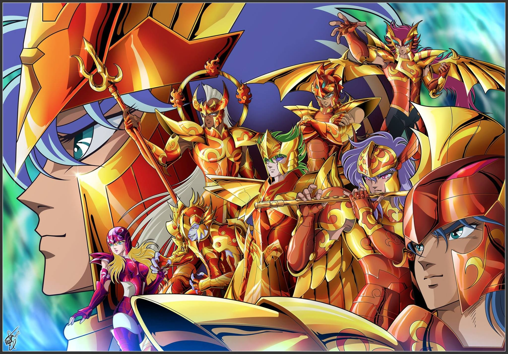
Os Marinas de Poseidon, também são conhecidos como os 7 Generais são encarregados de proteger o Templo Submarino de Poseidon, o Deus dos mares. os Marinas são poderosos guerreiros escolhidos pela própria Escama e não possuem restrição quanto ao uso de armas, quando pressentem a ressurreição de Poseidon, juntam-se no Templo Submarino, a fim de receber as suas Escamas. Além do título de Marina, esses guerreiros compartilham de um dos grandes ideais de Poseidon, que é "purificar a face terrestre". A fidelidade cega que têm em relação à Poseidon é a fonte de toda a força dos Marinas.
Lista de Marinas de Poseidon
Os 7 Generais Marinas
Sorento de Sirene
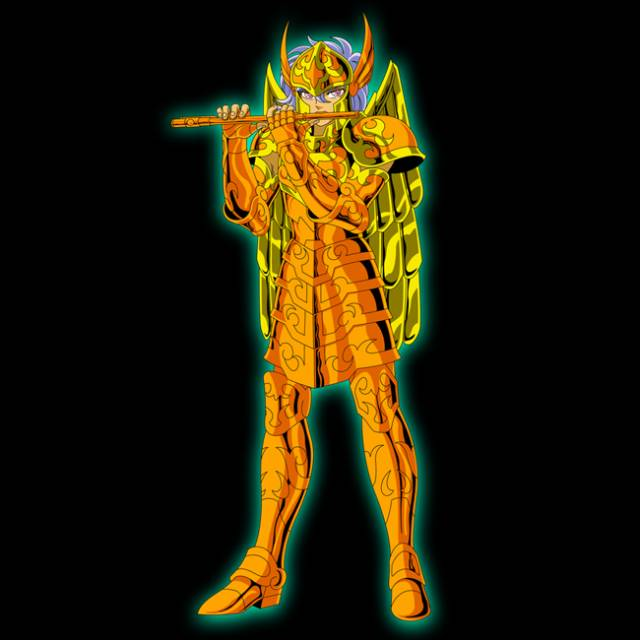 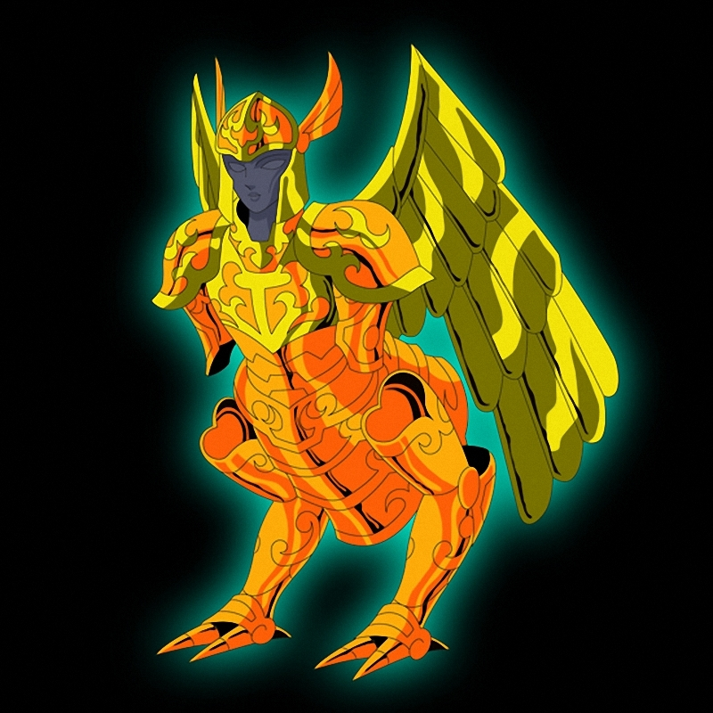
Classificação:
General Marina de Poseidon
Armadura:
Escama de Sirene
Pilar:
Pilar do Oceano Atlântico Sul
Divindade:
Poseidon
Técnicas:
- Sinfonia Final da Morte
- Clímax Final da Morte
Sorento de Sirene, é um dos 7 Generais Marinas. A sua flauta priva o inimigo de suas forças. Ele protegia o Pilar do Oceano Atlântico Sul. Dono de um coração puro, acreditava que purificar a face terrestre era o caminho para que Poseidon pudesse criar a utopia na terra.
Bian de Cavalo Marinho
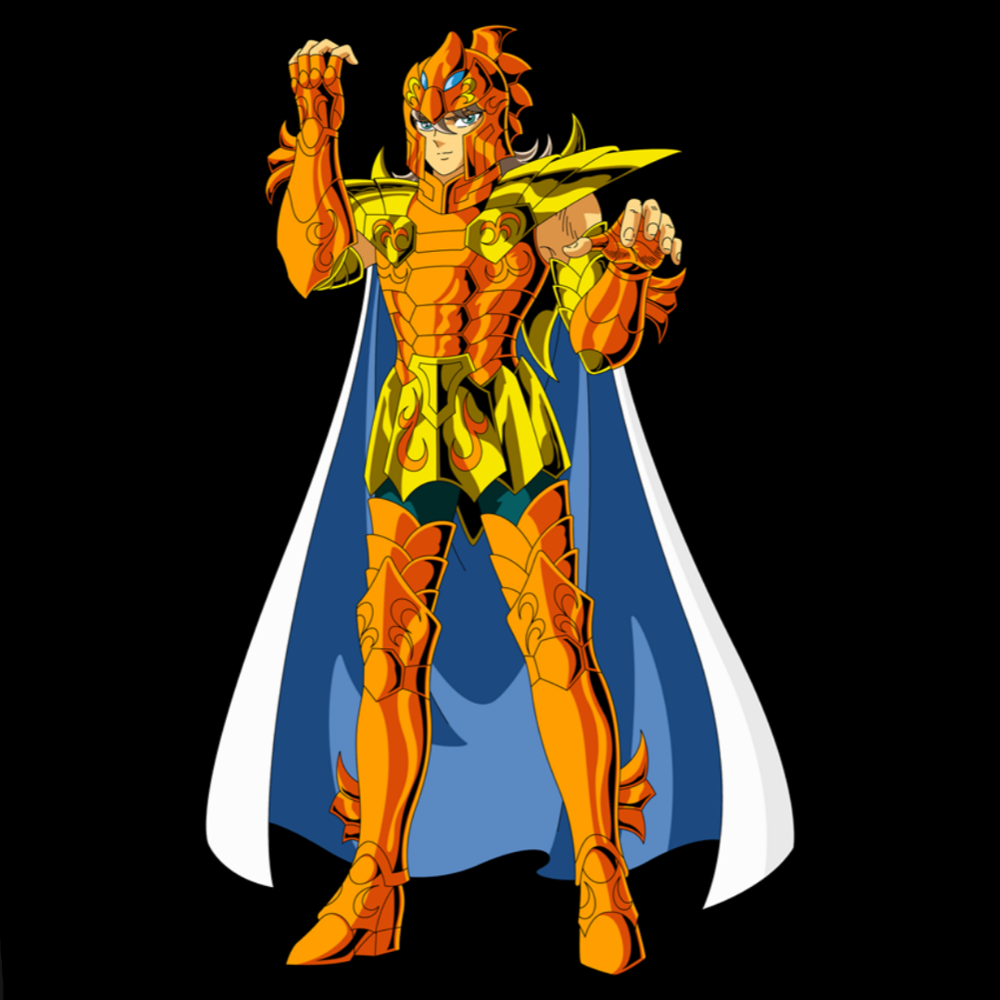 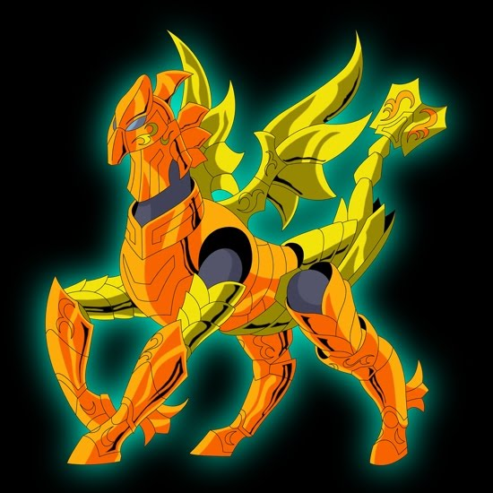
Classificação:
General Marina de Poseidon
Armadura:
Escama de Cavalo Marinho
Pilar:
Pilar do Pacífico Norte
Divindade:
Poseidon
Técnicas:
- Assopro de Divino
- Ventos de Furacão
Bian de Cavalo Marinho é o Marina de Cavalo Marinho e um dos mais poderosos entre os sete Generais Marinas de Poseidon. Protege o Pilar do Oceano Pacífico Norte. Bian possui o mesmo nível de capacidade de um Cavaleiro de Ouro, mas jamais enfrentou um inimigo mais forte que ele.
Io de Scylla
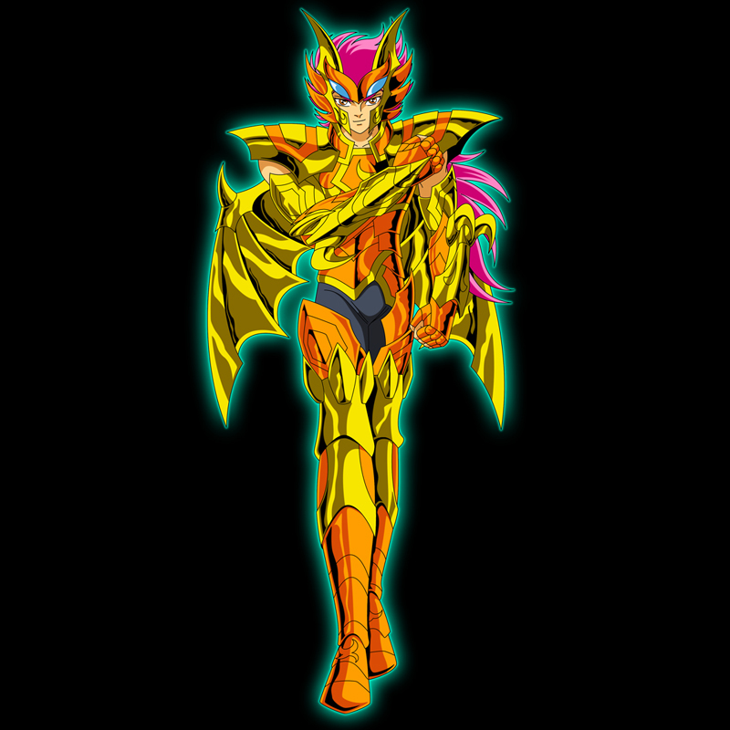 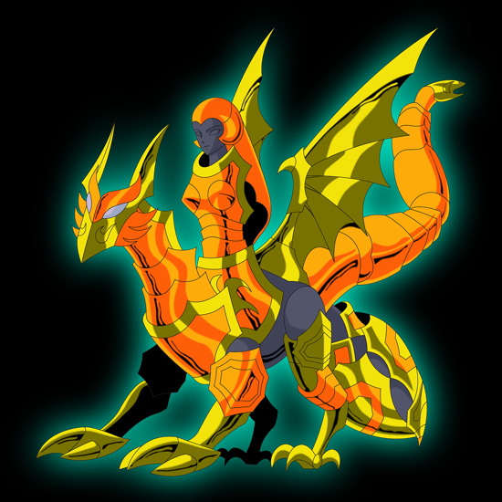
Classificação:
General Marina de Poseidon
Armadura:
Escama de Scylla
Pilar:
Pilar do Oceano Pacífico Sul
Divindade:
Poseidon
Técnicas:
- Águia Poderosa
- Fúria do Lobo
- Ferrão da Abelha Rainha
- Serpente Assassina
- Ataque Vampiro
- Urso Infernal
- Tornado Violento
Io de Scylla é um dos 7 Generais Marinas que protegia o Pilar do Oceano Pacífico Sul. Scylla ou Cila era um lendário monstro marinho com metade de cima do corpo a imagem de uma linda virgem e, a metade de baixo, seis bestas demoníacas. Assim como a lenda, Io esconde os poderes da águia, lobo, abelha, serpente, morcego e urso dentro de sua Escama.
Krishna de Chrysaor
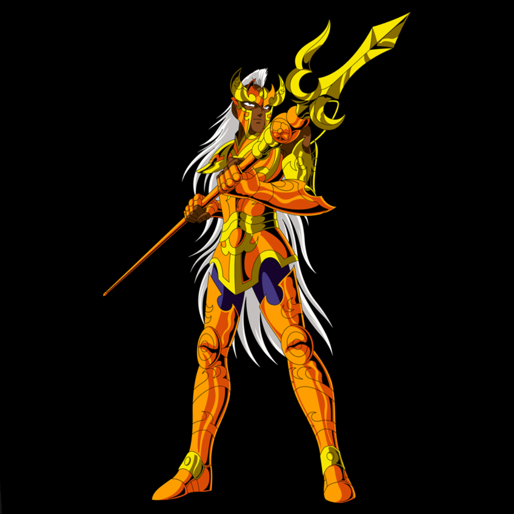 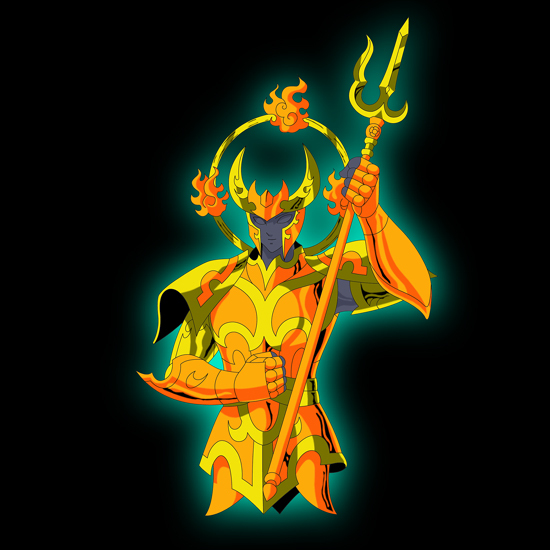
Classificação:
General Marina de Poseidon
Armadura:
Escama de Chrysaor
Pilar:
Pilar do Oceano Índico
Divindade:
Poseidon
Técnicas:
- Lança Relâmpago
- Maha Roshini
Krishna de Chrysaor é um dos Generais Marinas, protetor do Pilar do Oceano Índico. Ele se identifica profundamente com o ideal de purificação da terra de Poseidon. Acreditava piamente que isso serviria para acabar com a era das trevas. Possui um lado místico que projeta um poder surpreendente quando o Kundalini, a sua energia cósmica, é liberada pelos seus chakras. É um guerreiro que respeita o oponente que ele considere digno, mesmo sendo o inimigo.
Kasa de Lymnades
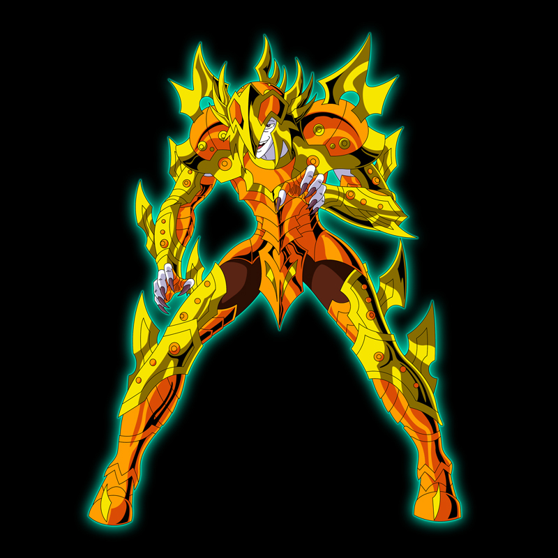 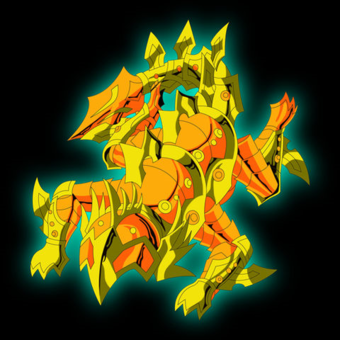
Classificação:
General Marina de Poseidon
Armadura:
Escama de Lymnades
Pilar:
Pilar do Oceano Antártico
Divindade:
Poseidon
Técnicas:
- Salamandra Satânica
Kasa de Lymnades é um dos Generais Marinas, encarregado de proteger o Pilar do Oceano Antártico. A sua Escama representa um monstro das águas da mitologia grega. Ele tem o poder de ler a mente de uma pessoa e descobrir quem é o seu ser mais amado, imitando-o não só fisicamente, mas também psicologicamente. Esse golpe baixo que se aproveita da fraqueza do ser humano.
Isaak de Kraken
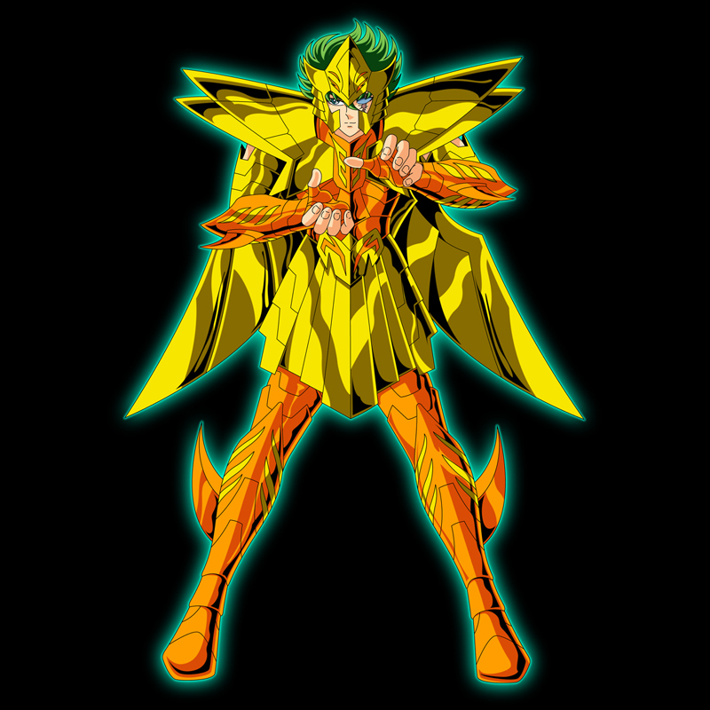 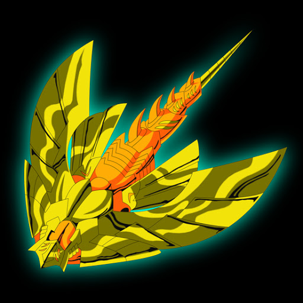
Classificação:
General Marina de Poseidon
Armadura:
Escama de Kraken
Pilar:
Pilar do Oceano Ártico
Divindade:
Poseidon
Técnicas:
- Aurora Boreal
Kanon de Dragão Marinho
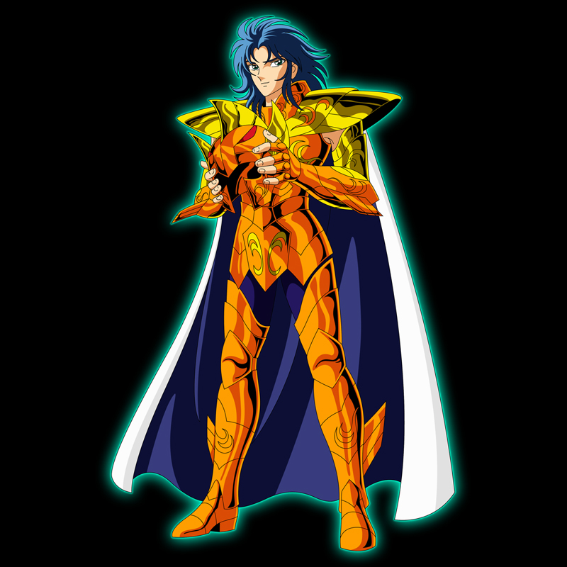 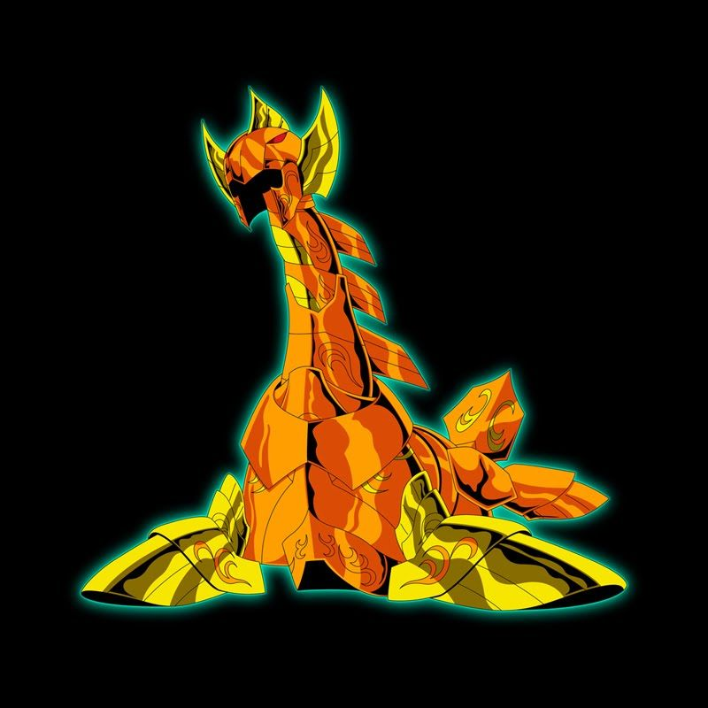
Classificação:
General Marina de Poseidon
Armadura:
Escama de Dragão Marinho
Pilar:
Pilar do Atlântico Norte
Divindade:
Poseidon
Técnicas:
- Outra Dimensão
- Satã Imperial
- Triângulo de Ouro
- Explosão Galáctica
Kanon de Dragão Marinho ou Kanon de Gêmeos é o Irmão gêmeo mais novo de Saga. Preocupado com a maldade de seu coração, Saga aprisiona-o no calabouço do despenhadeiro do Cabo Sunion. Por um acaso do destino, Kanon acaba libertando a alma de Poseidon, o Imperador dos Mares que havia sido selado por Atena. A partir disso, fez-se passar por General Marina de Dragão Marinho, comandando os outros Marinas com planos de dominar tanto a terra como o mar. Os seus poderes são tão fortes quanto os de seu irmão.